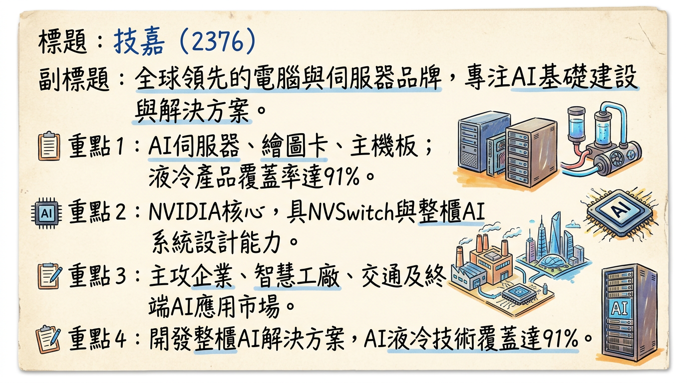
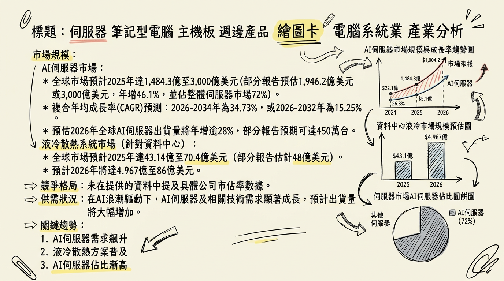
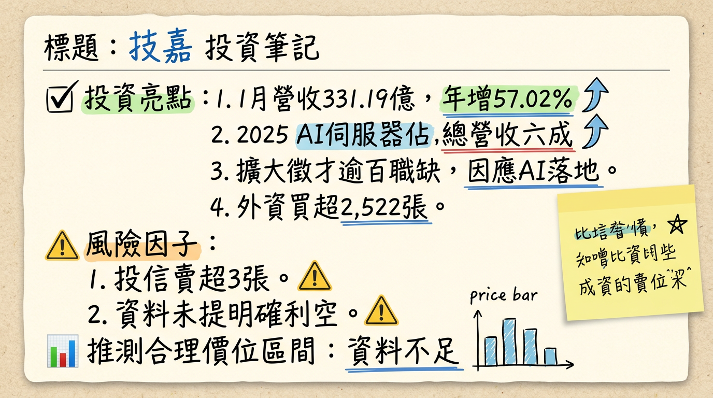

技嘉受惠於全球AI浪潮，以NVIDIA架構為核心，積極布局AI伺服器與液冷散熱技術，2025年營收創歷史新高新台幣3,369.35億元，AI伺服器訂單能見度已達2026年底，預期2026年營收將維持雙位數成長，法人甚至看好年增幅近三成，營運前景樂觀且具備高成長潛力。
技嘉科技（GIGABYTE）是全球領先的電腦與伺服器品牌，提供從單機到整櫃的AI解決方案，並是少數具備NVSwitch與整櫃AI系統設計能力的廠商。在AI領域，技嘉投入液冷（DLC）產品，覆蓋率已達91%，並開發整櫃級液冷模組與管理監控系統（LixSensor Core）。此外，也致力於GIGAPOD機櫃級解決方案，打造企業級AI運算中樞「AI Factory」，並將AI應用延伸至智慧工廠、交通等「Physical AI」領域及AI終端應用。
| 產品線 | 營收佔比 | 備註 |
|---|---|---|
| 伺服器產品 | 60% | AI伺服器佔整體伺服器營收逾八成；GB系列產品貢獻AI伺服器營收約兩成 |
| 顯示卡 | 25% | |
| 主機板 | 10% | |
| 其他產品 | 5% |
技嘉主要生產基地歷史上約七成在中國，三成在台灣，但為提升供應彈性及因應關稅，正積極在馬來西亞、美國、巴西與歐洲等地多元化生產佈局，銷往美國的高階產品幾乎都在台灣生產。
| 月份 | 金額 (億元) | 月增率 MoM | 年增率 YoY |
|---|---|---|---|
| 2026/01 | 331.19 | 9.28% | 57.02% |
| 2025/12 | 303.06 | -1.38% | 72.22% |
| 2025/11 | 307.30 | 8.52% | 38.16% |
| 2025/10 | 未找到 | 未找到 | 未找到 |
| 2025/09 | 未找到 | 未找到 | 未找到 |
| 2025/08 | 未找到 | 未找到 | 未找到 |
| 季度 | 季營收 (億元) | 季增率 QoQ | 年增率 YoY | 毛利率 | 營業利益率 | EPS (元) |
|---|---|---|---|---|---|---|
| 2025年Q4 | 893.54 | 12.27% | 36.2% | 未找到 | 未找到 | 未找到 |
| 2025年Q3 | 795.81 | 0.05% | 12.98% | 9.91% | 4.32% | 4.56 |
| 2025年Q2 | 795.42 | 20.98% | 39.7% | 9.42% | 5.18% | 3.29 |
| 2025年Q1 | 657.47 | -26.47% | 42.4% | 12.9% | 6.45% | 4.65 |
| 2024年Q4 | 894.25 | 12.37% | 93.78% | 10.12% | 3.77% | 4.31 |
| 2024年Q3 | 795.81 | - | 90.96% | 10.59% | 5.24% | 2.91 |
| 年度 | 全年營收 (億元) | 年增率 YoY | 全年EPS (元) | 備註 |
|---|---|---|---|---|
| 2025年 | 3,369.35 | 27.08% | 18.51 - 20 | 創歷史新高 |
| 2024年 | 2,651.48 | 93.78% | 15.03 | 營收獲利大幅成長 |
最近一次公開法說會約在2025年11月14日舉行，主要說明2025年第三季財報與營運展望：
* 2026年資本支出初步估計將提升至新台幣10億至12億元，並將視需求動態調整。主要用於台灣、美國、馬來西亞與巴西等地擴產。
| 券商名稱 | 目標價 (新台幣) | 評等 | 日期 |
|---|---|---|---|
| FactSet共識 | 320 | 積極樂觀 | 2026年3月6日 |
| FactSet共識 | 320 | 積極樂觀 | 2025年12月24日 |
| FactSet共識 | 322.5 | 積極樂觀 | 2025年11月25日 |
* FactSet (分析師共識) 2026年EPS預估中位數：19.46元 (截至2025年11月25日，最高估值22.27元，最低估值17.73元)。
| 季度 | 毛利率 | 營業利益率 | 稅後淨利率 | EPS (元) | 變化原因簡述 |
|---|---|---|---|---|---|
| 2025年Q3 | 9.91% | 4.32% | 4.11% | 4.56 | 受益於AI伺服器比重提升，但仍受匯率殘餘影響。 |
| 2025年Q2 | 9.42% | 5.18% | 3.29% | 3.79 | 受新台幣匯率異常波動影響，毛利率下滑；營業費用控管良好。 |
| 2025年Q1 | 12.9% | 6.45% | 5.16% | 4.65 | 受惠AI伺服器及繪圖卡高階新品銷售增溫，獲利創歷史同期新高。 |
| 2024年Q4 | 10.12% | 3.77% | 4.69% | 4.31 | AI伺服器加速擴張，全年營收EPS大幅成長。 |
| 2024年Q3 | 10.59% | 5.24% | 未提供 | 2.91 | AI伺服器營收佔比有望挑戰5成。 |
利潤率變化主要受產品組合（AI伺服器與高階板卡比重）、匯率波動及營運費用控制影響。2025年Q1受惠於AI伺服器與高階繪圖卡放量，毛利率與營益率表現亮眼。2025年Q2因新台幣匯率劇烈波動導致毛利率下降，但公司已表示此影響已於8月結束，並將調整匯率避險策略。
| 季度 | 存貨週轉天數 | 應收帳款收現天數 |
|---|---|---|
| 2025年Q3 | 70.98天 | 37.69天 |
| 2025年Q2 | 55.31天 | 31.39天 |
| 2025年Q1 | 80.42天 | 40.56天 |
| 2024年Q4 | 67.21天 | 41.94天 |
* 2025年預估：新台幣8億元
* 2024年：新台幣19億元 (異常高，可能為初期AI伺服器擴張)
* 趨勢： 資本支出呈現顯著上升趨勢，主要為因應AI伺服器強勁需求及全球產能擴充。
* 在東南亞、美國、巴西與歐洲的L10 (伺服器組裝與測試)、L11 (伺服器整機系統)、L12 (整機機櫃解決方案) 組裝已陸續上線，以強化供應鏈彈性。
* 馬來西亞廠已進行AI伺服器組裝出貨，美國加州廠開始小量試產。
* AI伺服器訂單能見度已達2026年底，新產能將確保未來出貨量。
* 2024年度：現金股利新台幣6.3579元 (除息日2024/08/05，現金殖利率2.42%)。
* 趨勢： 2025年現金股利顯著成長，反映獲利能力提升。
| 市場領域 | 2025年市場規模（預估） | 2026年市場規模（預估） | CAGR （預估區間） |
|---|---|---|---|
| AI伺服器市場 | 1,484.3億 - 3,000億美元 | 1,691.8億 - 2,622.2億美元 | 15.25% - 34.73% (2026-2034/32) |
| 液冷散熱系統市場 | 43.14億 - 70.4億美元 (資料中心) | 4.967億 - 86億美元 (資料中心) | 8.25% - 21.1% (2025-2035/32) |
| 公司名稱 | 類型 | 2025年AI伺服器市場佔有率（預估） | 備註 |
|---|---|---|---|
| NVIDIA | GPU供應商 | 超過90% (GPU-based AI servers) | 核心AI晶片供應商，主導AI伺服器生態系 |
| 技嘉 (GIGABYTE) | ODM/品牌 | 未找到具體排名資料 | AI伺服器成長快速，佔伺服器業務逾80%，液冷技術領先 |
| 廣達 (Quanta) | ODM | 未找到具體排名資料 | 主要AI伺服器ODM廠，客戶含北美CSP |
| 緯創 (Wistron) | ODM | 未找到具體排名資料 | 主要AI伺服器ODM廠，客戶含北美CSP |
| 英業達 (Inventec) | ODM | 未找到具體排名資料 | 主要AI伺服器ODM廠 |
| Supermicro (美超微) | OEM/ODM | 未找到具體排名資料 | 在AI伺服器領域具競爭力，出貨量成長快 |
| Dell / HPE | OEM | 未找到具體排名資料 | 傳統伺服器巨頭，積極轉型AI伺服器 |
| 項目 | 技嘉 | 廣達/緯創/英業達 (台灣ODM大廠) | 美超微 (Supermicro) |
|---|---|---|---|
| 技術 | NVIDIA架構核心，具NVSwitch與整櫃AI設計能力。液冷技術領先，DLC覆蓋率91%，LixSensor Core。GIGAPOD機櫃級解決方案。 | 與北美CSP緊密合作，具備大型雲端資料中心AI伺服器設計製造經驗。 | 以模組化、彈性設計著稱，提供多種AI優化解決方案。 |
| 產能 | 台灣、馬來西亞、美國、巴西擴產，2026年資本支出約10-12億元。 | 積極在全球（美國、墨西哥、泰國等）擴建產能。 | 全球快速擴充。 |
| 客戶 | CSP、二線CSP、大型企業、研究機構、第三方算力公司、Physical AI應用。 | 主要為北美四大CSP及其他大型資料中心業者。 | CSP、企業級客戶。 |
| 價格/毛利 | 高階AI伺服器比重逾80%，有助提升毛利率。 | 大型CSP議價能力強，毛利率通常較低，但高階AI有助提升。 | 策略性定價，在AI市場具競爭力。 |
| 公司代號 | 公司名稱 | 業務重點 | 2025年營收規模（預估/資訊） | 2025年毛利率（預估/資訊） | 2025年EPS（預估/資訊） | 備註 |
|---|---|---|---|---|---|---|
| 2376 | 技嘉 | AI伺服器、繪圖卡、主機板、液冷解決方案 | 3,369.35億元 | 9.42%-12.9% (Q1-Q3) | 前三季13.77元 / 預估18.51-20元 | AI伺服器佔伺服器業務逾80% |
| 2382 | 廣達 | AI伺服器、筆記型電腦、雲端基礎設施 | 2.1236兆元 | 預期受惠AI伺服器高成長 | 未找到完整年度數據 | 2025年營收年增50.54%，利潤創新高 |
| 3231 | 緯創 | AI伺服器、筆記型電腦、顯示器 | 未找到完整年度數據 | 預期AI伺服器提升毛利率 | 未找到完整年度數據 | AI伺服器營運動能強勁 |
| 2377 | 英業達 | AI伺服器、筆記型電腦、智慧裝置 | 未找到完整年度數據 | AI伺服器可推升毛利率 | 未找到完整年度數據 | AI伺服器佔比從5%翻倍邁向10% |
* 趨勢： AI晶片（如NVIDIA B200/B300）TDP從700W飆升至1000W以上，傳統氣冷無法滿足。液冷因熱容量與熱導率更高，成為AI資料中心剛需。AI資料中心液冷滲透率預計將從2024年的14%提升至2025年的33%，輝達新一代GPU架構Vera Rubin（預計2026年量產）將全面採用100%液冷設計。
* 影響： 伺服器設計全面轉向液冷，帶動冷水板、流體分配單元（CDU）等關鍵零組件需求。液冷能將資料中心電力使用效率（PUE）從1.5以上降至1.1，顯著降低營運成本。
* 趨勢： AI模型規模推動NVIDIA、AMD及CSP自研ASIC晶片高速發展，算力與功耗同步飆升。
* 影響： AI伺服器需支援更高密度GPU/ASIC，採NVSwitch等複雜互連技術及整櫃式解決方案。對高頻寬記憶體（HBM）需求持續爆發，成為關鍵瓶頸。電源、PCB、連接器等零組件需符合更高功率、高速傳輸要求。
* 趨勢： AI推理任務逐步下放至終端，邊緣運算盒、AI智慧眼鏡、工業電腦等應用場景加速落地。
* 影響： 伺服器廠商需開發更多高效能嵌入式系統與工業電腦，延伸AI至智慧工廠、交通等Physical AI領域。帶動低功耗晶片與感測模組發展。
對技嘉的具體機會與威脅：* 液冷市場高成長： 液冷滲透率大幅提升，技嘉在液冷模組與管理監控系統上的投入，使其能搶佔此高成長市場。
* 產品多元化： 將AI應用延伸至Physical AI與AI終端，分散風險並擴大營收來源。
* 全球產能佈局： 有效應對地緣政治風險及客戶在地化需求。
* CSP自研ASIC： 大型CSP自研ASIC可能改變部分市場競爭格局。
* 產業競爭加劇： 廣達、緯創、英業達、美超微等競爭對手積極擴張，市場競爭激烈。
* 零組件價格波動： AI需求帶動半導體供應鏈吃緊，晶片及關鍵零組件價格可能上漲，影響生產成本與毛利率。
相關投資題材連結：* 董事會通過再以14億元購置現總部附近寶橋路36、38號大樓，因應營運成長與規模擴大。
* 國際合作： 與韓國SK Telecom合作發展在地化解決方案；與中東Kernel Enterprise合作布局當地AI基礎建設市場，預期中東將是未來AI重鎮。
* 中國市場： 若NVIDIA H200/Higher-tier平台進入中國市場政策放寬，技嘉在當地具立即量產能力。
* 2026年初步估計為新台幣10億元至12億元，年增25-50%，並可能視需求增加，主要用於台灣、馬來西亞及美國的產能擴張，以應對AI伺服器強勁訂單。
* 東南亞、美國、巴西與歐洲的L10（伺服器組裝與測試）、L11（伺服器整機系統）、L12（整機機櫃解決方案）組裝已陸續上線。
* 馬來西亞廠已進行AI伺服器組裝出貨，美國加州廠開始小量試產。
* 終端應用： 大型CSP、第三方算力公司（Nebius、CoreWeave）合作需求旺盛。企業級市場（台積電、聯發科）需求成長。地端AI應用走入智慧工廠、交通等Physical AI。個人AI終端應用（AI TOP超級電腦、AI筆電）。
技嘉在AI浪潮中處於極具優勢的地位，其投資價值基於以下三至五點：
綜合以上分析，技嘉在AI伺服器及液冷散熱領域的技術與市場領先地位，加上明確的成長動能與擴產計畫，使其成為AI產業浪潮中具備核心競爭力的投資標的。基於FactSet分析師共識目標價與其2026年EPS潛力，建議投資人可將新台幣330元至380元設為技嘉的潛在目標價區間。
本報告由 AI 自動產生，資料來源為公開網路資訊，僅供參考，不構成投資建議。產生時間：2026-03-06 15:07


